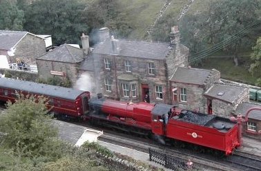

Houses
Throughout the school year, the houses compete for the House Cup, gaining and losing points based on actions such as performance in class and rule violations.
"Hogsmeade looked like a Christmas card; the little thatched cottages and shops were all covered in a layer of crisp snow; there were holly wreaths on the doors and strings of enchanted candles hanging in the trees."
Hogsmeade, was the only all-wizarding village in Britain. It was founded by Hengist of Woodcroft. Since before 1714 (when the 1714 Edict was passed), Hogwarts third-years and above had been permitted weekend trips into the village.Mainly, students frequented the High Street in the village, which contained the named speciality shops and pubs such as Zonko's Joke Shop and Honeydukes. Hogsmeade was a picturesque little village of cottages and shops, with enchanted candles hanging in the trees during the holidays. It was also near the location of the train station used by the Hogwarts Express.
 |
The Hogsmeade Post Office was a building in the village of Hogsmeade that housed at least two–to–three–hundred owls, ranging from great grey owls to tiny scops owls (the latter for "local deliveries only"), hooting down from colour-coded shelves. The shelves were colour-coded based on how quickly they will arrive at their destination. |
|  | Hogsmeade station was a “tiny, dark platform” where the Hogwarts Express ended its journey north from Platform Nine and Three-Quarters. The railway station served both the village of Hogsmeade and Hogwarts School of Witchcraft and Wizardry. |
 |
Scrivenshaft's Quill Shop was a writing supplies store in Hogsmeade set up by Scrivenshaft. It sold various quills, parchment and stationery needed for students at Hogwarts. The shop stock included stationery such as rainbow ink and extra-large quills. |
 |
Dominic Maestro's was a music shop in Hogsmeade, run by Dominic Maestro, a musician, who once got an award at Hogwarts, possibly for excelling in music. |
 |
Gladrags Wizardwear was a clothing store that was founded in 1750 and run by Gladrags Wizardwear Group Ltd., with branches in London, Paris and Hogsmeade.It was full of quirky merchandise and appeared to specialise in strange and unusual socks. |
Move Your Mouse Here to Star Case 1
Move Your Mouse Here to Star Case 2
| Type of Quills | Price |
|---|---|
| Dolores Umbridge's Blood Quill | $85 |
| Magical Quill | $85 |
| Quick-Quotes Quill | $75 |
| Self-Inking Quill | $65 |
| Smart-Answer Quill | $65 |
| Spell-Checking Quill | $55 |
| Self-Spelling Quill | $55 |
| Sugar Quills | $55 |